Appendix C — Climate change drove the deep-time assembly of biodiversity
C.1 Paleoclimatic data
C.1.1 Neogene paleotemperature layers used in climate reconstructions.
Spatially explicit reconstructions of mean annual surface temperature across the Northern Hemisphere from 23 to 2 Ma, shown at 1-Myr intervals and 1° × 1° spatial resolution. Each panel represents a single time slice, displayed using a common diverging color scale to facilitate comparison across time. These layers form the basis for estimating directional temperature change and climatic instability used in subsequent analyses.
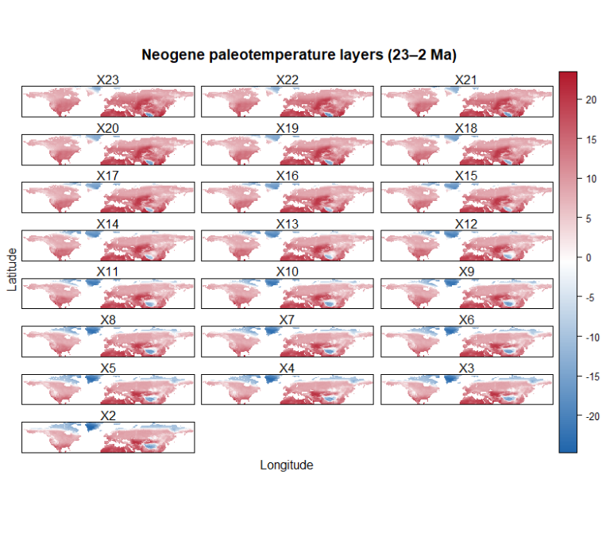
C.1.2 Computing the rate of climate change
We reconstructed smooth, continuous temperature trajectories through time for every spatial grid cell and then quantifies how temperature changes between successive time steps.
First, all climate rasters are brought onto a common spatial grid so that each pixel represents the same geographic location across time. Only grid cells with at least one valid observation are retained, ensuring that subsequent analyses are based on empirical information rather than interpolation alone. For each grid cell, temperature values through time are treated as a time series. A smooth trajectory is estimated using a generalized additive model (GAM). This smoothing step captures long-term temporal structure while reducing the influence of short-term fluctuations or reconstruction noise.
Once smoothed trajectories are obtained, temperature change is quantified as the difference between consecutive time steps. These first differences approximate the rate and direction of temperature change through time, allowing spatially explicit assessment of climatic dynamics rather than static climate conditions.
C.1.2.1 Sensitivity of Neogene temperature‐change estimates to GAM smoothing choices.
We tested three model configurations represent alternative assumptions about how smooth or flexible temperature trajectories are allowed to be through time. Together, they form a sensitivity analysis of temporal smoothing choices.
gam_6_3(df = 6, degree = 3): This specification allows relatively high temporal flexibility. With more degrees of freedom, the fitted temperature trajectories can follow finer-scale temporal variation while still remaining smooth. Conceptually, this version captures both long-term trends and moderate mid-frequency fluctuations, making it more responsive to shorter climatic events.gam_4_3(df = 4, degree = 3): This represents an intermediate level of smoothing. Fewer degrees of freedom constrain the model to emphasize broader temporal structure while still allowing curved (nonlinear) trajectories. In practical terms, this version prioritizes long-term climatic trends while down-weighting smaller oscillations.gam_4_2(df = 4, degree = 2): This is the most conservative specification. With fewer degrees of freedom and a lower polynomial degree, temperature trajectories are forced to be smoother and closer to simple curvature. This emphasizes persistent, low-frequency climatic change and minimizes sensitivity to short-term variability or noise in the reconstructions.
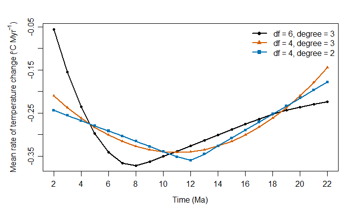
C.2 Fossil data
C.2.0.1 Spatiotemporal binning of fossil locations into fossil paleoassemblages
Fossil occurrences were aggregated into standardized paleoassemblages using a spatiotemporal binning procedure. Records were first assigned to continents and then spatially grouped into regularly spaced bins (~100 km) to reduce the effects of uneven sampling intensity. Each spatial bin was combined with a discrete temporal bin based on rounded midpoint ages to define unique spatiotemporal assemblages. These paleoassemblages provide comparable units of community composition for subsequent analyses of turnover and paleobiogeographic structure.
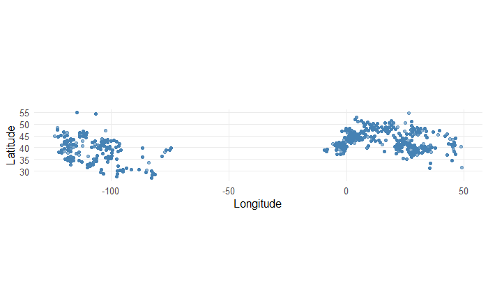

C.2.0.2 Rarefied richness across geological time
Species richness was evaluated within each continent, trophic guild, and time bin using both rarefaction and richness estimation approaches. Fossil occurrence data were split into spatiotemporal subsets (continent × trophic guild × time bin), and for each subset we computed sample-based species accumulation curves (via repeated random permutations) to quantify how observed richness increases with the number of sampled localities. In parallel, we estimated pooled richness for each subset using nonparametric estimators to account for unseen taxa. Outputs from all subsets were then combined into a single data frame containing the number of sites sampled, mean accumulated richness, and uncertainty (standard deviation and standard error across permutations) for direct comparison of sampling completeness and richness trajectories across continents, trophic groups, and time intervals.
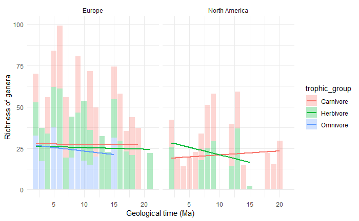
C.2.0.3 Estimating turnover among fossil paleoassemblages
We estimated compositional turnover among paleoassemblages using genus-level presence–absence data. It first converts the fossil occurrences into a genus × paleoassemblage incidence matrix, then removes poorly sampled paleoassemblages by requiring a minimum number of observations (default: >3). Abundances are reduced to presence–absence to focus on composition rather than counts. Pairwise dissimilarities are then computed among paleoassemblages using the Simpson-based turnover component (β_SIM) from the betapart framework, yielding a matrix that quantifies the degree of taxonomic replacement (turnover) between all pairs of paleoassemblages.

C.2.0.4 Paleobiogeographic regions estimation
C.2.0.5 Space time covariates
We used spatial and temporal covariates to estimate paleobiogeographic regions with a distance-informed stochastic block model (SBM). First, we parse the paleoassemblage identifiers to recover each assemblage’s geographic coordinates and time assignment. Then, we match those time labels to numeric ages. Using these values, we build two pairwise covariate matrices: a geographic distance matrix among assemblages (great-circle distance on Earth) and a temporal distance matrix based on differences in age. These covariates are then supplied to a Gaussian SBM fitted to the turnover matrix (β_SIM), so that assemblages are clustered into paleobiogeographic regions based on their compositional relationships while explicitly accounting for the tendency of nearby (in space and/or time) assemblages to be more similar.
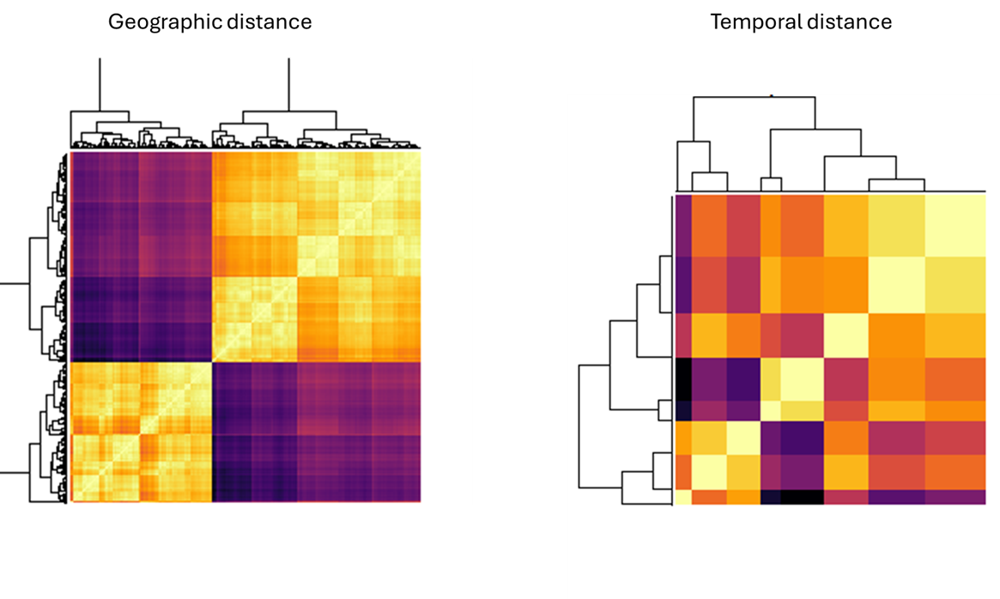
C.2.0.6 Range of cluster estimation
The stochastic block model was fitted using an iterative estimation procedure with a fixed maximum number of iterations to ensure convergence while limiting overfitting. Model complexity was explored by allowing the number of paleobiogeographic regions to vary within a predefined range, defined by minimum and maximum group numbers. This constrained exploration ensures that inferred regionalizations capture meaningful structure in the turnover matrix while avoiding solutions that are either overly coarse or excessively fragmented. We assigned each paleoassemblage to an inferred paleobiogeographic region at a maximization of ICL.
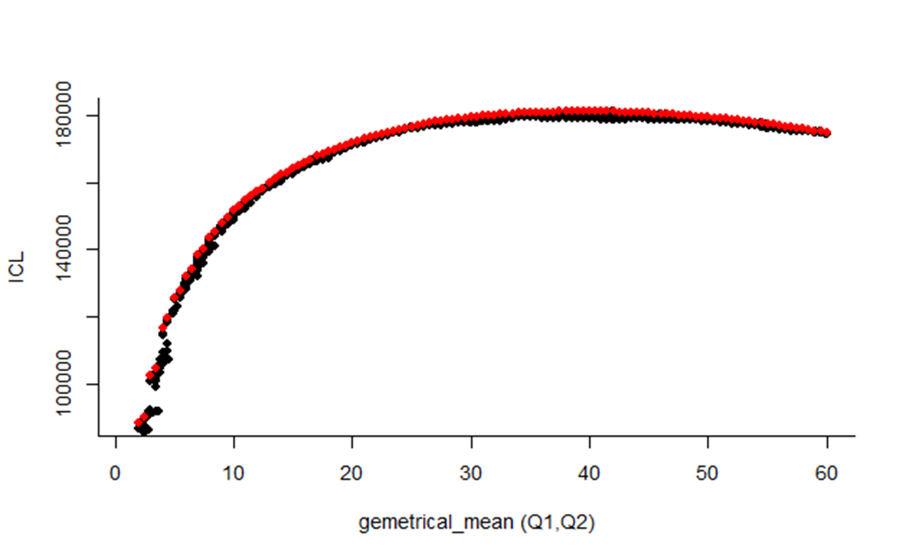
C.2.0.7 Number of paleobiogeographic regions
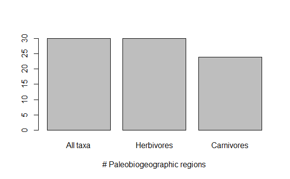
C.2.0.8 Temporal variation
C.2.0.8.1 All taxa
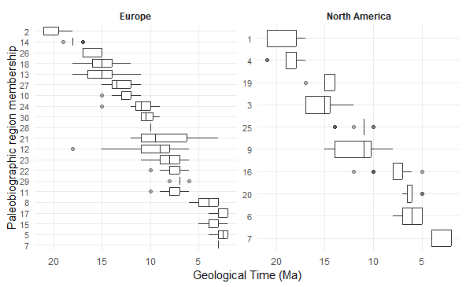
C.2.0.8.2 Herbivores
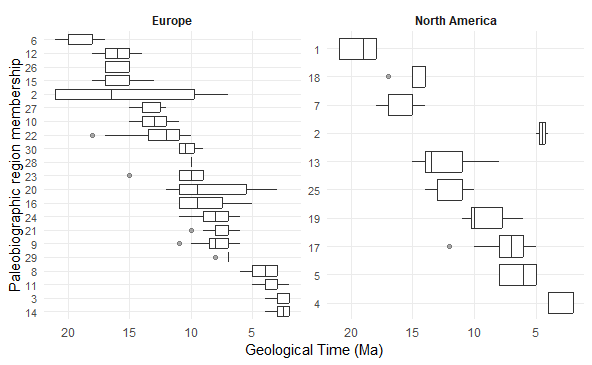
C.2.0.8.3 Carnivores
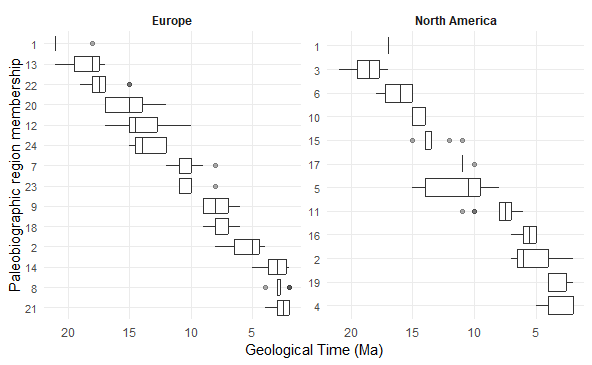
C.2.0.9 Reduced turnover matrices
To derive a region-level measure of compositional turnover, we extracted from the SBM model the diagonal elements of the SBM connectivity matrix, which summarize the average compositional dissimilarity among assemblages belonging to the same paleobiogeographic region. These region-level turnover values are then joined back to the paleoassemblage data, allowing each assemblage to inherit the turnover estimate of its assigned region.
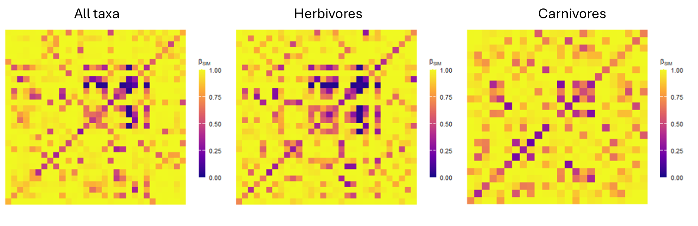
C.2.0.10 Evaluating sampling effort

C.2.0.11 Sampling intensity of paleobiographic regions
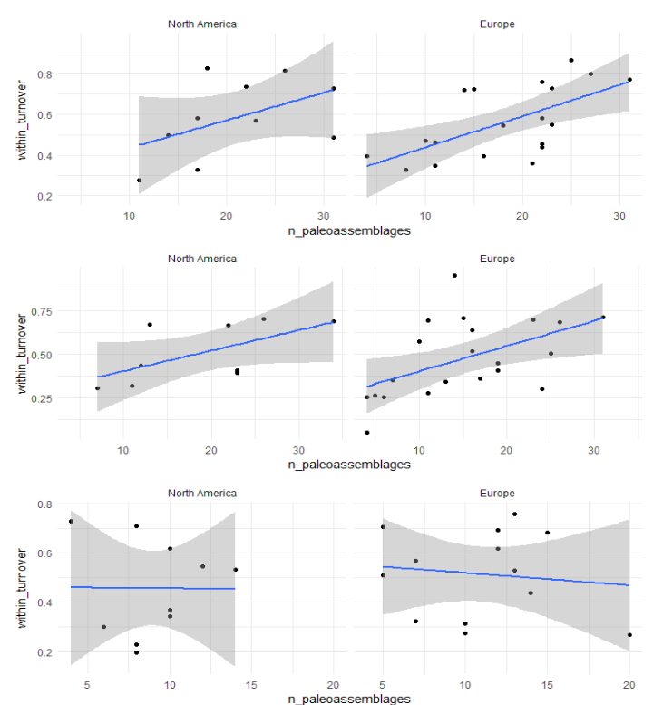
C.2.1 Predicted effects of climate change in paleobiogeographic turnover
We linked climatic dynamics to paleobiogeographic regions by directly extracting temperature-change and instability values for the fossil assemblages that define each region. We first ensured that each paleoassemblage has a numeric time assignment and an associated paleobiogeographic region derived from the SBM. We then use raster stacks of GAM-derived temperature change (first differences between consecutive time steps) as spatially explicit climate covariates. For each time bin represented in the fossil data, we extract temperature-change values at the locations of paleoassemblages and associate them with their corresponding regions. We merge these climate values with region-level within-region turnover estimates and aggregate them by time, region, and continent to calculate mean (magnitude) and instability (standard deviation) in temperature change. This produces a region-level dataset that aligns climatic dynamics with compositional turnover in space and time, enabling subsequent analyses of climate–turnover relationships. We modeled within-region compositional turnover using beta regression to quantify the effects of climate dynamics while explicitly accounting for sampling effort and separately for herbivores and carnivores.
C.2.1.1 Herbivores
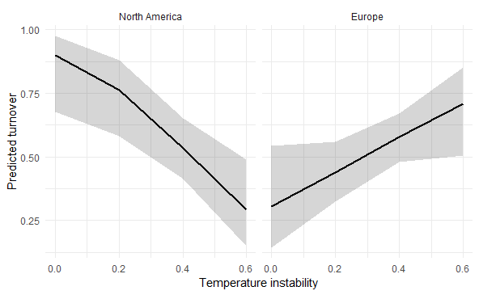
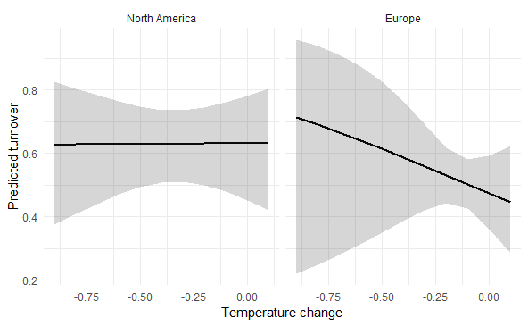
C.2.2 Carnivores
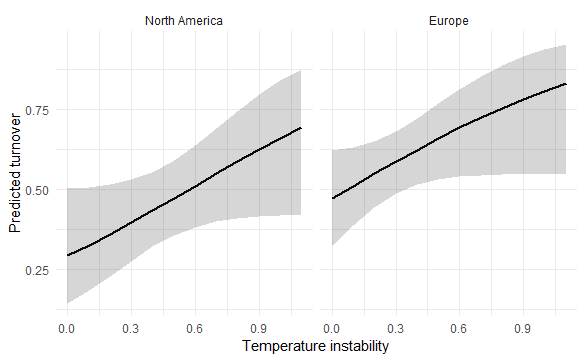
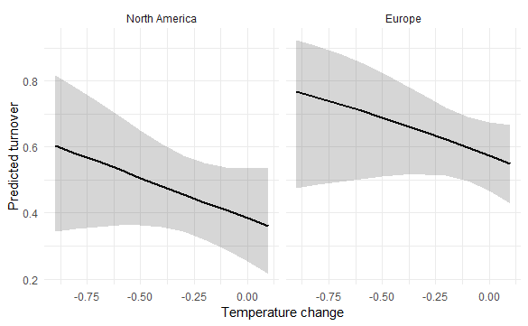
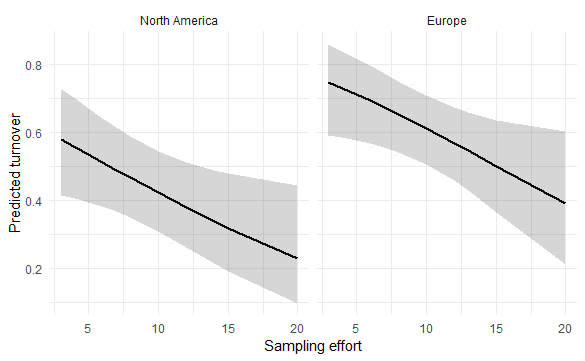